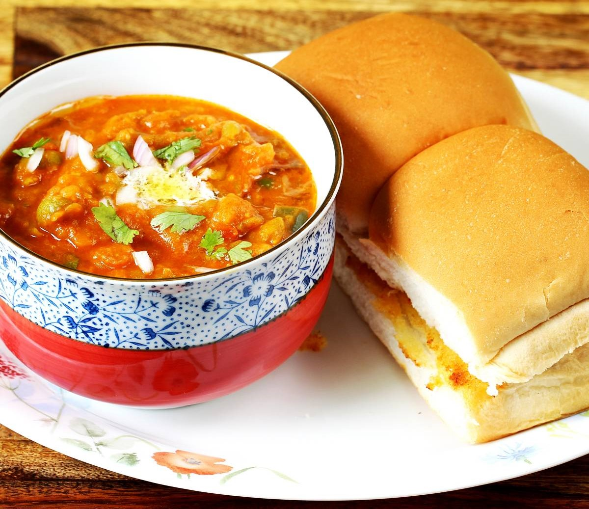

PAV BHAJI : Mumbai Dish
Preparation Time: 15 minutes
Cooking Time: 25 minutes
Serves: 3 servings

Ingredients:
- 2 medium Potatoes (approx. 1½ cups chopped)
- 1/2 cup Green Peas (fresh or frozen)
- 3/4 cup chopped Cauliflower (approx. 1/4 head of cauliflower)
- 1/2 cup chopped Carrot (approx. 1 medium)
- 1 large Onion, chopped (approx. 3/4 cup)
- 1 tablespoon Ginger Garlic Paste
- 2 medium Tomatoes, chopped (approx. 1¼ cup)
- 1/2 cup chopped Capsicum (approx. 1 small)
- 1½ teaspoons Red Chilli Powder (or less)
- 1/4 teaspoon Turmeric Powder
- 1 teaspoon Cumin-Coriander Powder (Optional)
- 1 teaspoon Readymade Pav Bhaji Masala Powder
- 1 teaspoon Lemon Juice
- 2 tablespoons Oil + 2 tablespoons Butter
- 2 tablespoons finely chopped Coriander Leaves
- 8 Pav Buns, for serving
- Salt to taste
- Butter for serving
Directions:
- Take all the vegetables listed in the ingredients. Wash them in running water and cut them into small pieces.
- Transfer chopped potato, cauliflower, carrot and green peas into a 2-3 liter capacity pressure cooker. Add 1/2 cup water and salt to taste.
- Close the pressure cooker with a lid and cook over medium flame for 2-whistles. Turn off the flame. Open the lid after pressure releases naturally; it will take around 5-7 minutes.
- Mash the boiled vegetables gently with potato masher or using the backside of a large spoon until little chunky texture. You can mash cooked veggies into a texture you like - with small chunks or smooth with no chunks at all. The texture of your bhaji would depend on how you mashed the veggies.
- Heat 2-tablespoons oil and 2-tablespoons butter together in a pan over medium flame. Add chopped onion and ginger-garlic paste. Sauté until onion turns translucent.
- Add chopped capsicum, chopped tomato and salt.
- Sauté until tomatoes and capsicum turn soft.
- Add 1½ teaspoons red chilli powder, 1/4 teaspoon turmeric powder, 1-teaspoon cumin-coriander powder and 1-teaspoon readymade pav bhaji masala powder.
- Stir and cook for a minute.
- Add 3/4 cup water, mix well and cook for 2-3 minutes.
- Add boiled and mashed vegetables and 1-teaspoon lemon juice.
- Mix well and cook for 4-5 minutes. Taste for the salt at this stage and add more if required. Turn off the flame. Add chopped coriander leaves and mix well. Bhaji is ready for serving.
- Cut the pav buns horizontally into halves. Heat tava over medium flame. Add a tablespoon of butter and place halved pav buns over it. Shallow fry both sides until light brown spots appear, it will take around 30 seconds for each side to turn light brown. Transfer to the plate. Shallow fry remaining pavs.
- Transfer prepared bhaji to a serving bowl and garnish with a cube of butter. Serve hot with butter roasted pav, sliced onion and lemon wedges.
Tips and Variations:
- Add veggies like brinjal, broccoli, french beans, sweet corn etc per your preference for variation in taste and texture.
- Mash boiled veggies until it has the texture that you prefer (in step-4) your bhaji to have – little chunky or smooth paste.
- Add a small piece of beetroot along with vegetables while boiling to get the deep red color of bhaji. Additionally use Kashmiri red chilli powder instead of regular red chilli powder.
- Garnish hot bhaji with grated mozzarella cheese to make cheese pav bhaji.
- The taste of bhaji greatly depends on the butter, so don't reduce its quantity.
- In this recipe we have used Badshah brand readymade pav bhaji masala but you can use any other brand's masala.
Taste: Mild Spicy
Serving Ideas: Serve bhaji with roasted pav buns, chopped onion and sliced tomato in dinner. It can be also served as a party snack.
Source: FoodViva